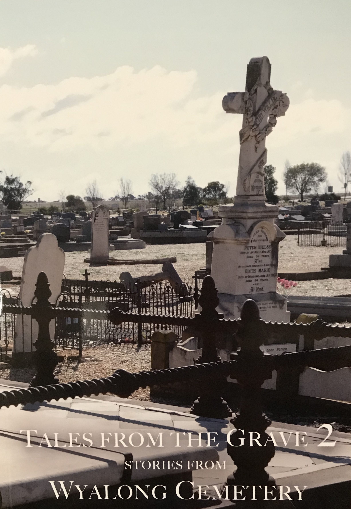

THE MALLEE STUMPNew December 2021 Issue now available See Publications
125 Golden YearsOur new photographic book on the history of our commercial buildings over more than a century. Some copies are still available. See Publications
MEMBERS INTERESTSSee our new page highlighting the family interests of our members. Share & Grow your family tree. See Members
The Wyalong District Family History Group Inc.(WDFHG) has been serving historians and genealogists in their quest for historical, genealogical and research information, within our local region since 1994.
Our archives include available registers, lists and resources of towns listed in the Bland Shire. All resources, events & workshops are accessible to both members & non-members.
Contact us by clicking on the link.
Email: genealogy@wyalongfamilyhistory.com